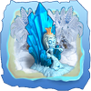

Получено: файл; исходный URL. Фото Королевства льда, подписанное в статье. Копия moy.su по пути zombicity.info; побайтовая идентичность разных хостов не проверена. Оригинальный файл без перекодирования; автор и дата создания неизвестны. Страница: источник.
Королевство льда
историческая браузерная версия; платформа и редакция не уточнены- Тип
- Локация по каталогу ЗомбиСити
- Версия и дата
- историческая браузерная версия; платформа и редакция не уточнены
Дополнительные изображения

Данные по источнику · браузерная «Зомби Ферма» / «Зомби Мания»; платформа не уточнена · снимок каталога 10.12.2019; дата редакции неизвестна
Предварительно: Фанатский каталог; возможны общие картинки для разных локаций и зависимость от других источников.. Требуется сверка.
- Каталог
- В разделе «Новые Острова в игре» указана локация «Королевство льда».
- Оговорка
- Каталог показывает название, картинку и ссылку; отдельная статья по этой ссылке не прочитана в рамках этого импорта. Условия доступа и версии требуют проверки.
- Сравнение снимков
- Эта же подпись, раздел и адрес картинки присутствуют в снимке того же каталога 14.09.2018; это не независимое подтверждение.
Данные по источнику · историческая браузерная Зомби Ферма / Зомби Мания · 30.01.2016 — дата в URL; дата редакции неизвестна
Предварительно: Фанатский источник; исторические данные, платформа не уточнена, независимость от ЗомбиСити не установлена.. Требуется сверка.
- Доступ и условия
- С Зимнего леса на отремонтированных Санках Слона 2: 5 компасов, 50 000 монет и 5 снежков. На острове находится рулетка Принцесса Эмма и недостроенные Санки Слона 3 на Снежный Пик. Статья может быть дополнена позднее даты в адресе: ссылка на Эмму датирована 2 февраля 2016.


Данные по источнику · браузерная социальная версия; сеть не уточнена · 30.01.2016
Предварительно: Проверено название и выборочно миниатюры кадров, не полный просмотр. Видеозапись может показывать изменённую карту; исходные координаты не установлены.. Требуется сверка.
- Видео
- Предпросмотр видео показывает путь и покрытую снегом территорию; отдельные фрагменты острова видны после перехода. Степень расчистки и исходное состояние требуют проверки.
Связанные сущности
- Санки Слона 3 — Королевство льда — локация объекта по статье
- Принцесса Эмма — Королевство льда — локация объекта по статье
- В путь — Унесённые ветром 2, 2016 — локация задания
- Лютый холод — Унесённые ветром 2, 2016 — локация задания
- Эмма — Унесённые ветром 2, 2016 — локация задания
- Карта — Унесённые ветром 2, 2016 — локация задания
- В путь — Унесённые ветром 2, 2016 — локация задания
Источники
- ЗомбиСити: архив каталога, снимок 10.12.2019
- Ссылка из каталога; отдельная статья не проверена
- ЗомбиСити: тот же каталог, снимок 14.09.2018; не независимый источник
- Zombie-island.moy.su — иллюстрация каталога (связанный источник)
- Zombie-island: отдельная статья локации
- Поездка и обзор Королевства льда, ZombiCity, 30.01.2016